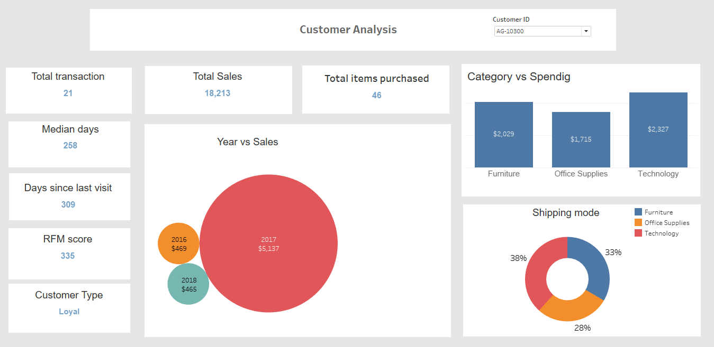

The Northwind Traders project involves analyzing the performance of their website and gaining valuable insights
about their products and customers. This analysis encompasses a range of metrics, including revenue,
total orders, and various other metrics related to customers and products.
These key metrics play a vital role in assessing the success and effectiveness of the company's
operations, allowing for informed decision-making and strategic planning. By closely monitoring
and analyzing these metrics, Northwind Traders can optimize their website,
enhance their product offerings, and better cater to their customers' needs.

In this project, the primary focus is on analyzing customer data gathered from diverse sources to identify crucial trends and patterns.
To achieve this, statistical analysis methods and data visualization techniques were employed. These approaches were instrumental in revealing concealed insights within the customer data. By uncovering these insights, a deeper understanding of customer behavior and preferences can be gained. Ultimately, this knowledge can inform decision-making processes
and help drive strategic actions to enhance customer satisfaction and achieve business goals.
The RFM model is a customer segmentation approach used to analyze customer profitability and maximize return on investment (ROI). By leveraging SQL,
businesses can conduct RFM analysis to identify which customers are most valuable and prioritize efforts to retain them. This allows for targeted
marketing strategies and personalized approaches to enhance customer satisfaction and increase profitability.
RFM analysis enables businesses to efficiently process large volumes of customer data and gain
valuable insights into customer behavior.
In this project, the primary focus is on analyzing customer data gathered from diverse sources to identify crucial trends and patterns.
To achieve this, statistical analysis methods and data visualization techniques were employed. These approaches were instrumental in revealing concealed insights within the customer data. By uncovering these insights, a deeper understanding of customer behavior and preferences can be gained. Ultimately, this knowledge can inform decision-making processes
and help drive strategic actions to enhance customer satisfaction and achieve business goals.
The RFM model is a customer segmentation approach used to analyze customer profitability and maximize return on investment (ROI). By leveraging SQL,
businesses can conduct RFM analysis to identify which customers are most valuable and prioritize efforts to retain them. This allows for targeted
marketing strategies and personalized approaches to enhance customer satisfaction and increase profitability.
RFM analysis enables businesses to efficiently process large volumes of customer data and gain
valuable insights into customer behavior.